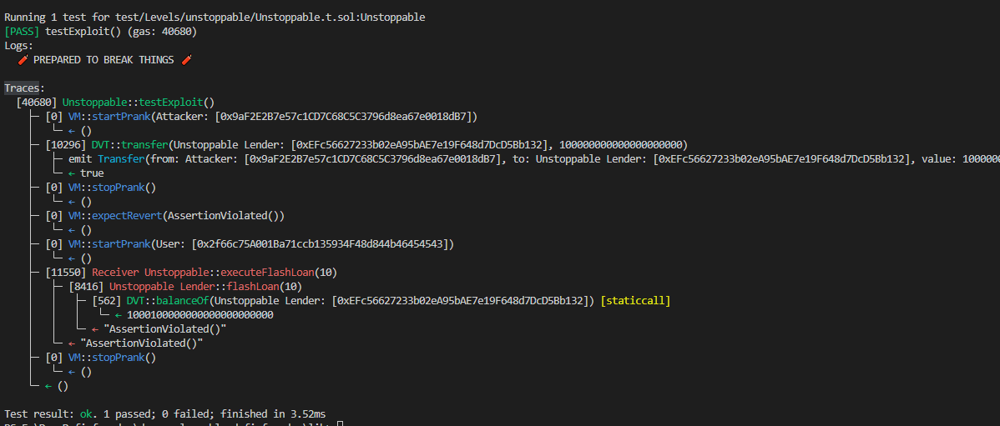

Foundry-很牛逼的框架
author：Thomas_Xu
最近在做CTF的时候发现题目使用了Foundry来部署，于是抱着好奇心研究了一下Foundry。不得不说，这个框架真的很牛逼，最直观的是他的测试速度。其次是其再测试时可以输出很多详细信息（以后碰到revert再也不用一行代码一行代码的去找错了）
下面咱们来细说Foundry：
为什么用Foundry？
- Foundry使用solidity来编写单元测试，而不是JavaScript或python
- 编译和测试的速度快
- 内置模糊测试
- Gas优化工具
- 很详尽的Traces信息
- 支持主网分叉
- Etherscan 代码验证
- 硬件钱包兼容
- 通过作弊代码操纵区块链状态
展示一段测试结果，大家就能明白foundry的强大

Foundry简介
Foundry 是一个新出的由rust写的合约开发框架。
rust一直在改变编程界的格局，btc C语言开发，eth go主导，也有 rust 的eth
波卡链 直接rust，兴起跨链的生态。
快和安全，就是rust 优势吧。在foundry中也体现出了这点。
Foundry安装
由于Foundry是基于Rust开发的，所以在linux下安装会非常方便。
Linux/Mac:
1 | curl -L https://foundry.paradigm.xyz | bash; |
两行命令搞定
Windows: (需要rust环境，再次不多赘述)
1 | cargo install --git https://github.com/foundry-rs/foundry --bins --locked |
Docker:
你还可以通过docker安装foundry
1 | docker pull ghcr.io/foundry-rs/foundry:latest |
但是我在win10上执行cargo install --git https://github.com/foundry-rs/foundry --bins --locked命令时遇到了一点问题，foundry-cli一直安装不成功。最后我发现居然可以直接可以在github上下载exe文件 github地址，下载完了之后配置一下环境变量，即可正常使用forge,cast,anvil三个核心组件。
Foundry包含的组件
forge
Forge是一个CLI工具，用于构建、测试、模糊测试、部署和验证Solidity合约。Forge同样有很多的子命令。
init
它可以初始化一个新的版本库：
1 | forge init my_gigabrain_protocol |
install
install子命令允许你安装指定版本的依赖项：
1 | forge install Rari-Capital/solmate@v6 |
这将安装由Rari-Capital拥有的solmate软件库
test
为了运行测试，我们可以使用以下方法：
1 | forge test |
和hardhat类似，我们也可以通过路径去唯一指定test
1 | forge test --match-contract testname |
Cast
Cast是一个CLI工具，用于对兼容以太坊虚拟机（EVM）的区块链进行RPC调用。使用cast，我们可以进行合约调用，查询数据，并处理编码和解码。cast有很多的子命令，所以要想获得完整的参考，请看Foundry书中的cast一节.
cast给我们提供了一个很方便的和EVM交互的工具
Anvil
Anvil是一个CLI工具，用于运行本地EVM区块链。它可以与ganache和hardhat节点相媲美，但好像更快。
要启动Anvil，只需使用avil命令：
1 | anvil |
你也可以指定一些参数， 用-v来显示详细日志，如果用-fork-url <FORK_URL>指定URL来分叉一个公共网络，等等。要查看 anvil选项的完整列表，可以使用以下命令：
1 | anvil -h |
Foundry作弊码
Foundry有一套作弊代码，它可以对区块链的状态进行修改，以方便在测试时使用。这些代码可以直接执行合约：0x7109709ECfa91a80626fF3989D68f67F5b1DD12D 进行调用，但更多时候是通过标准库和vm对象执行。
你可以通过
1 | address(bytes20(uint160(uint256(keccak256("hevm cheat code"))))) |
来获取这个地址
重要的作弊代码有：
- vm.warp(uint256) external; 设置 block.timestamp
- vm.roll(uint256) external; 设置 block.height.
- vm.prank(address) external; 设置地址作为下一次调用的msg.sender
- vm.startPrank(address) external; 设置地址作为所有后续调用的msg.sender
- vm.stopPrank() external; 重置后续调用msg.sender为
address(this)。 - vm.deal(address, uint256) external; 设置一个地址的余额，参数：（who，newBalance）。
- vm.expectRevert(bytes calldata) external; 期待下次调用时出现错误。
- vm.record() external; 记录所有存储的读和写。
- vm.expectEmit(true, false, false, false); emit Transfer(address(this)); transfer(); 检查事件主题1在两个事件中是否相等
- vm.load(address,bytes32)外部返回(bytes32); 从一个地址加载一个存储槽
- vm.store(address,bytes32,bytes32) external; 将一个值存储到一个地址的存储槽中，参数（who, slot, value）。
这些可以用来改变测试的过程，如在这个例子中，告诉测试套件在调用时期望一个标准的算术错误。
1 | vm.expectRevert(stdError.arithmeticError); |
完整的列表在这里：https://github.com/foundry-rs/forge-std/blob/master/src/Vm.sol
Gas优化
编译时的合约Gas报告可以通过foundry.toml配置来设置
1 | gas_reports = ["MyContract", "MyContractFactory"] |
然后用forge test -gas-report选项执行命令。
优化函数的一个方法是使用测试合约，并在修改前后进行快照对比：
1 | forge snapshot --snap gas1.txt |
这将提供之前的Gas报告和当前快照之间的差异。
部署和使用合约
Foundry也可以用来部署并与智能合约交互。
要部署一个合约，我们可以使用下面的命令：
1 | forge create --rpc-url https://mainnet.infura.io --private-key abc123456789 src/MyContract.sol:MyContract --constructor-args "Hello Foundry" "Arg2" |
注意我们在生产中部署时不应该使用硬编码的私钥。一个选择是使用-ledger或-trezor来通过硬件钱包执行。另外，也可以使用环境变量来存储私钥。
我们还可以使用forge命令在etherscan上验证合约，以便我们能够使用Etherscan的UI和Metamask与之交互。
1 | forge verify-contract --chain-id 1 --num-of-optimizations 200 --constructor-args (cast abi-encode "constructor(string)" "Hello Foundry" --compiler-version v0.8.10+commit.fc410830 0xContractAddressHere src/MyContract.sol:MyContract ABCetherscanApiKey123 |
要生成ABI，可以使用以下命令：
1 | forge inspect src/MyContract.sol abi |
注意任何ABI都可以转换为接口并直接在solidity中使用： https://gnidan.github.io/abi-to-sol/
如果合约已经被验证，我们也可以使用以下命令来生成一个接口。
1 | cast interface 0x1f9840a85d5aF5bf1D1762F925BDADdC4201F984 |
用 Cast 与链上合约交互
我们可以call 方式调用合约请求链上数据。我们也可以提供凭证（私钥）来发送一个交易，就像我们在metamask中签署一个交易一样。
1 | cast call 0xabc123 "totalSupply()(uint256)" --rpc-url https://eth-mainnet.alchemyapi.io |
一旦区块被确认，也可以获取交易本身的信息：
1 | cast tx 0xa1588a7c58a0ac632a9c7389b205f3999b7caee67ecb918d07b80f859aa605fd |
Foundry编写Damn_Defi测试用例
这是我在油管上看到一个大佬重写的Damn_Defi，我通过跟着此此测试重做Damn_Defi学到很多
注：forge install如果失败，把镜像换成国内镜像，然后把lib下的所有文件夹删了再试。

true

...
...
This is copyright.